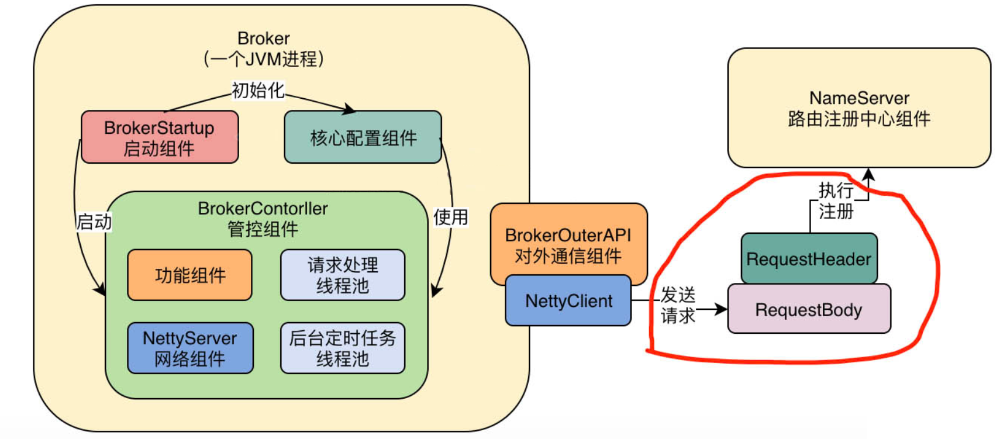
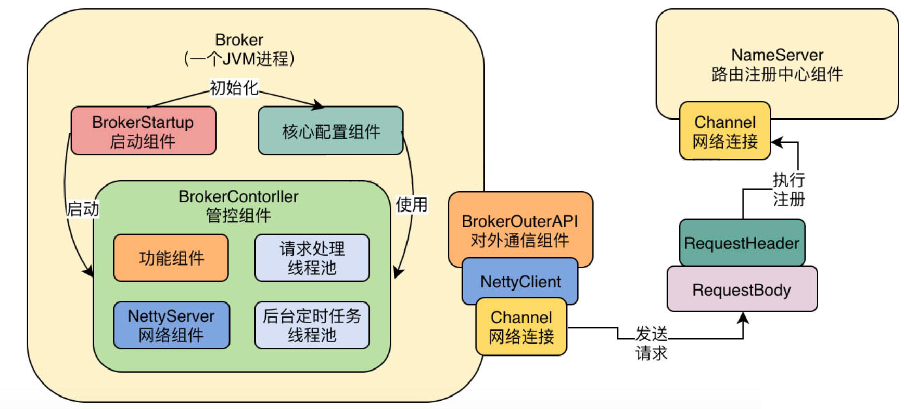
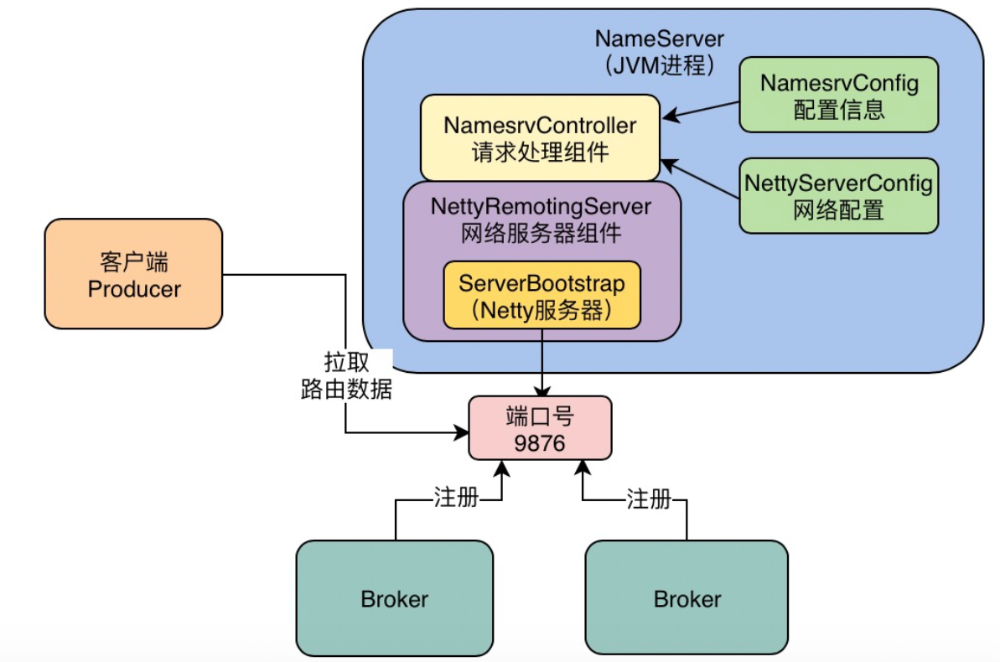
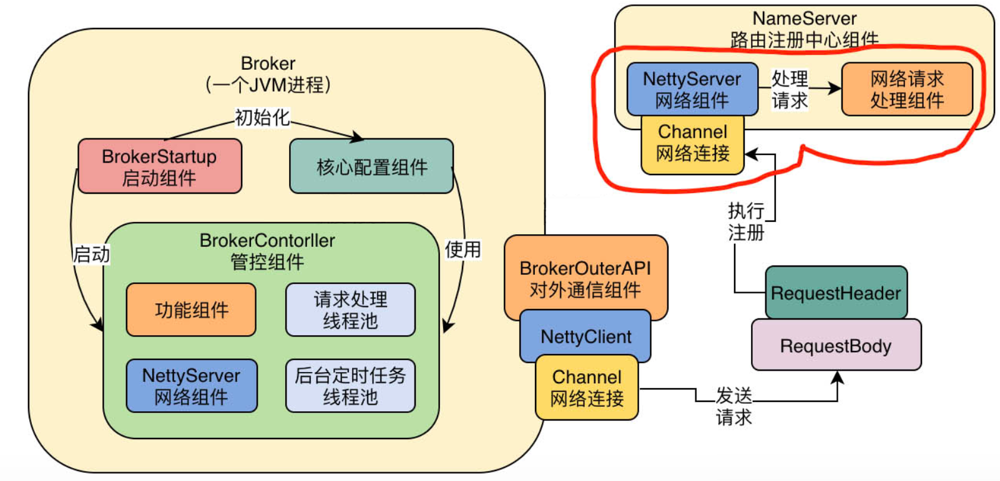
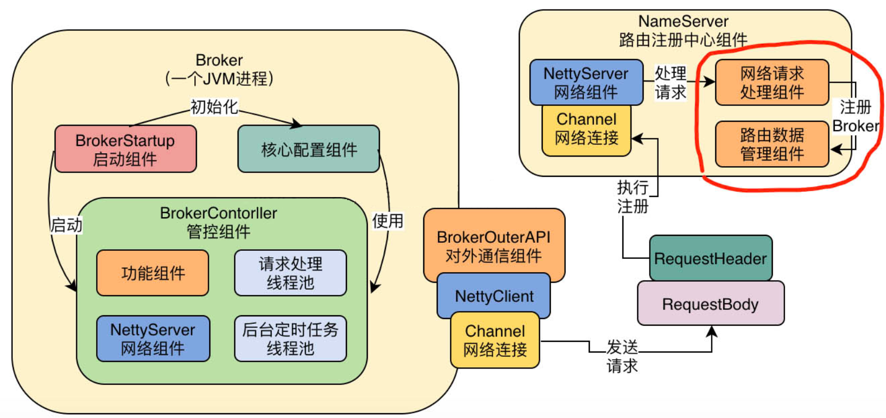

RocketMQ源码分析（四）——Broker注册原理
上一章，我们详细讲解了Broker的启动原理，它的本质是内部启动了一个Broker控制器——BrokerController，由它来控制Broker的各种行为，BrokerController内部引用了很多组件，包括Netty服务器接收网络请求，各种核心功能组件，负责处理请求的线程池，负责执行定时调度任务的后台线程等，如下图：

本章，我们就来看下它是如何将当前的Broker实例注册到NameServer中的：
BrokerController.this.registerBrokerAll(true, false, brokerConfig.isForceRegister());
一、发送注册请求
我们进入BrokerController的registerBrokerAll()方法中，一探究竟：
public synchronized void registerBrokerAll(final boolean checkOrderConfig, boolean oneway, boolean forceRegister) {
// Topic配置相关操作，暂时忽略
TopicConfigSerializeWrapper topicConfigWrapper = this.getTopicConfigManager().buildTopicConfigSerializeWrapper();
// TopicConfig相关操作，暂时忽略
if (!PermName.isWriteable(this.getBrokerConfig().getBrokerPermission())
|| !PermName.isReadable(this.getBrokerConfig().getBrokerPermission())) {
ConcurrentHashMap<String, TopicConfig> topicConfigTable = new ConcurrentHashMap<String, TopicConfig>();
for (TopicConfig topicConfig : topicConfigWrapper.getTopicConfigTable().values()) {
TopicConfig tmp =
new TopicConfig(topicConfig.getTopicName(), topicConfig.getReadQueueNums(), topicConfig.getWriteQueueNums(),
this.brokerConfig.getBrokerPermission());
topicConfigTable.put(topicConfig.getTopicName(), tmp);
}
topicConfigWrapper.setTopicConfigTable(topicConfigTable);
}
// 这里比较关键，注册Broker
if (forceRegister || needRegister(this.brokerConfig.getBrokerClusterName(),
this.getBrokerAddr(),
this.brokerConfig.getBrokerName(),
this.brokerConfig.getBrokerId(),
this.brokerConfig.getRegisterBrokerTimeoutMills())) {
doRegisterBrokerAll(checkOrderConfig, oneway, topicConfigWrapper);
}
}
上述代码一开始都是对TopicConfig这个对象的相关操作，可以忽略，我们的目的是了解Broker的核心注册流程，最后一段代码才是关键：先判断是否要进行注册，如果需求则调用doRegisterBrokerAll进行注册：
private void doRegisterBrokerAll(boolean checkOrderConfig, boolean oneway,
TopicConfigSerializeWrapper topicConfigWrapper) {
// 调用brokerOuterAPI.registerBrokerAll发送请求到NameServer进行注册，返回注册结果
List<RegisterBrokerResult> registerBrokerResultList = this.brokerOuterAPI.registerBrokerAll(
this.brokerConfig.getBrokerClusterName(),
this.getBrokerAddr(),
this.brokerConfig.getBrokerName(),
this.brokerConfig.getBrokerId(),
this.getHAServerAddr(),
topicConfigWrapper,
this.filterServerManager.buildNewFilterServerList(),
oneway,
this.brokerConfig.getRegisterBrokerTimeoutMills(),
this.brokerConfig.isCompressedRegister());
// 对注册结果进行处理
if (registerBrokerResultList.size() > 0) {
RegisterBrokerResult registerBrokerResult = registerBrokerResultList.get(0);
if (registerBrokerResult != null) {
// 涉及Master/Slave的一些机制，暂时忽略
if (this.updateMasterHAServerAddrPeriodically && registerBrokerResult.getHaServerAddr() != null) {
this.messageStore.updateHaMasterAddress(registerBrokerResult.getHaServerAddr());
}
this.slaveSynchronize.setMasterAddr(registerBrokerResult.getMasterAddr());
if (checkOrderConfig) {
this.getTopicConfigManager().updateOrderTopicConfig(registerBrokerResult.getKvTable());
}
}
}
}
doRegisterBrokerAll方法最核心的地方，其实就是调用了brokerOuterAPI.registerBrokerAll()发送请求给NameServer进行注册。
1.1 BrokerOuterAPI
registerBrokerAll
注册请求实际是委托给BrokerOuterAPI去操作的，BrokerOuterAPI我们在上一章提到过，其实就是个Netty客户端，我们看下这个对象的registerBrokerAll方法内部到底做了些什么：
public List<RegisterBrokerResult> registerBrokerAll(
final String clusterName,
final String brokerAddr,
final String brokerName,
final long brokerId,
final String haServerAddr,
final TopicConfigSerializeWrapper topicConfigWrapper,
final List<String> filterServerList,
final boolean oneway,
final int timeoutMills,
final boolean compressed) {
// 存放注册结果
final List<RegisterBrokerResult> registerBrokerResultList = Lists.newArrayList();
// 获取NameServer集群地址
List<String> nameServerAddressList = this.remotingClient.getNameServerAddressList();
if (nameServerAddressList != null && nameServerAddressList.size() > 0) {
// 创建一个请求头，里面放当前Broker的各种信息
final RegisterBrokerRequestHeader requestHeader = new RegisterBrokerRequestHeader();
requestHeader.setBrokerAddr(brokerAddr);
requestHeader.setBrokerId(brokerId);
requestHeader.setBrokerName(brokerName);
requestHeader.setClusterName(clusterName);
requestHeader.setHaServerAddr(haServerAddr);
requestHeader.setCompressed(compressed);
// 创建一个请求体，里面放些Topic、Filter的配置
RegisterBrokerBody requestBody = new RegisterBrokerBody();
requestBody.setTopicConfigSerializeWrapper(topicConfigWrapper);
requestBody.setFilterServerList(filterServerList);
final byte[] body = requestBody.encode(compressed);
final int bodyCrc32 = UtilAll.crc32(body);
requestHeader.setBodyCrc32(bodyCrc32);
// 弄个CountDownLatch，目的是等主线程注册完所有NameServer后才往下走
final CountDownLatch countDownLatch = new CountDownLatch(nameServerAddressList.size());
// 遍历NameServer地址列表，每一个都去发送注册请求
for (final String namesrvAddr : nameServerAddressList) {
brokerOuterExecutor.execute(new Runnable() {
@Override
public void run() {
try {
// 真正执行注册的地方在这里
RegisterBrokerResult result = registerBroker(namesrvAddr,oneway, timeoutMills,requestHeader,body);
if (result != null) {
// 保存注册结果
registerBrokerResultList.add(result);
}
log.info("register broker[{}]to name server {} OK", brokerId, namesrvAddr);
} catch (Exception e) {
log.warn("registerBroker Exception, {}", namesrvAddr, e);
} finally {
countDownLatch.countDown();
}
}
});
}
try {
countDownLatch.await(timeoutMills, TimeUnit.MILLISECONDS);
} catch (InterruptedException e) {
}
}
return registerBrokerResultList;
}
上述整个逻辑还是很清晰的：
- 创建请求头、请求体，里面保存了待会儿要发送注册请求的信息；
- 遍历NameServer地址列表，发送请求；
- 返回注册结果。

CountDownLatch是J.U.C包提供的一个同步器工具类，可以看成是一个倒数计时器，用来控制线程的行为，不了解的童鞋建议好好看看我写的透彻理解Java并发编程系列。
registerBroker
真正执行注册逻辑的是下面这一行，我们来看下registerBroker方法：
RegisterBrokerResult result = registerBroker(namesrvAddr,oneway, timeoutMills,requestHeader,body);
registerBroker方法会通过底层的NettyClient，把这个请求发送到NameServer进行注册：
private RegisterBrokerResult registerBroker(
final String namesrvAddr,
final boolean oneway,
final int timeoutMills,
final RegisterBrokerRequestHeader requestHeader,
final byte[] body
) throws RemotingCommandException, MQBrokerException, RemotingConnectException, RemotingSendRequestException, RemotingTimeoutException,
InterruptedException {
// 将请求头和请求体封装成一个完整请求——RemotingCommand
RemotingCommand request = RemotingCommand.createRequestCommand(RequestCode.REGISTER_BROKER, requestHeader);
request.setBody(body);
// oneway表示不同等待注册结果
if (oneway) {
try {
this.remotingClient.invokeOneway(namesrvAddr, request, timeoutMills);
} catch (RemotingTooMuchRequestException e) {
// Ignore
}
return null;
}
// 利用RemotingClient发送注册请求，这个RemotingClient其实就是个Netty客户端
RemotingCommand response = this.remotingClient.invokeSync(namesrvAddr, request, timeoutMills);
// 下面是处理返回结果，封装成一个RegisterBrokerResult，暂时忽略
assert response != null;
switch (response.getCode()) {
case ResponseCode.SUCCESS: {
RegisterBrokerResponseHeader responseHeader =
(RegisterBrokerResponseHeader) response.decodeCommandCustomHeader(RegisterBrokerResponseHeader.class);
RegisterBrokerResult result = new RegisterBrokerResult();
result.setMasterAddr(responseHeader.getMasterAddr());
result.setHaServerAddr(responseHeader.getHaServerAddr());
if (response.getBody() != null) {
result.setKvTable(KVTable.decode(response.getBody(), KVTable.class));
}
return result;
}
default:
break;
}
throw new MQBrokerException(response.getCode(), response.getRemark());
}
上述代码最核心的就是下面这行：
RemotingCommand response = this.remotingClient.invokeSync(namesrvAddr, request, timeoutMills);
1.2 NettyRemotingClient
remotingClient其实就是一个Netty客户端，它的实现类是NettyRemotingClient，底层封装了Netty的API调用。
invokeSync
我们看下NettyRemotingClient的invokeSync方法：
public RemotingCommand invokeSync(String addr, final RemotingCommand request, long timeoutMillis)
throws InterruptedException, RemotingConnectException, RemotingSendRequestException, RemotingTimeoutException {
long beginStartTime = System.currentTimeMillis();
// 创建一个Channel,这个Channel可以理解成跟NameServer之间建立的一个连接
final Channel channel = this.getAndCreateChannel(addr);
if (channel != null && channel.isActive()) {
try {
// 计算时间开销，忽略
doBeforeRpcHooks(addr, request);
long costTime = System.currentTimeMillis() - beginStartTime;
if (timeoutMillis < costTime) {
throw new RemotingTimeoutException("invokeSync call timeout");
}
// 这里是真正发送请求
RemotingCommand response = this.invokeSyncImpl(channel, request, timeoutMillis - costTime);
// 忽略
doAfterRpcHooks(RemotingHelper.parseChannelRemoteAddr(channel), request, response);
return response;
} catch (RemotingSendRequestException e) {
log.warn("invokeSync: send request exception, so close the channel[{}]", addr);
this.closeChannel(addr, channel);
throw e;
} catch (RemotingTimeoutException e) {
if (nettyClientConfig.isClientCloseSocketIfTimeout()) {
this.closeChannel(addr, channel);
log.warn("invokeSync: close socket because of timeout, {}ms, {}", timeoutMillis, addr);
}
log.warn("invokeSync: wait response timeout exception, the channel[{}]", addr);
throw e;
}
} else {
this.closeChannel(addr, channel);
throw new RemotingConnectException(addr);
}
}
通过上面代码的分析，我们其实可以知道，Broker和NameServer之间通过Channel建立了一个网络连接，然后基于这个Channel就可以发送实际的网络请求了：

getAndCreateChannel
接着我们进入上面的this.getAndCreateChannel(addr)这行代码看看，他是如何跟NameServer之间建立实际的网络连接的？
private Channel getAndCreateChannel(final String addr) throws RemotingConnectException, InterruptedException {
// 先尝试从缓存中获取连接
if (null == addr) {
return getAndCreateNameserverChannel();
}
ChannelWrapper cw = this.channelTables.get(addr);
if (cw != null && cw.isOK()) {
return cw.getChannel();
}
// 没有就创建一个
return this.createChannel(addr);
}
/**
* 通过一个NameServer的地址创建出一个网络连接
*/
private Channel createChannel(final String addr) throws InterruptedException {
// 先尝试从缓存获取连接
ChannelWrapper cw = this.channelTables.get(addr);
if (cw != null && cw.isOK()) {
return cw.getChannel();
}
if (this.lockChannelTables.tryLock(LOCK_TIMEOUT_MILLIS, TimeUnit.MILLISECONDS)) {
try {
// 下面一堆代码都是尝试从缓存获取连接
boolean createNewConnection;
cw = this.channelTables.get(addr);
if (cw != null) {
if (cw.isOK()) {
return cw.getChannel();
} else if (!cw.getChannelFuture().isDone()) {
createNewConnection = false;
} else {
this.channelTables.remove(addr);
createNewConnection = true;
}
} else {
createNewConnection = true;
}
// 这里是真正创建连接的地方
if (createNewConnection) {
// 本质是基于Netty的Bootstrap类的connnect方法，创建一个连接
ChannelFuture channelFuture = this.bootstrap.connect(RemotingHelper.string2SocketAddress(addr));
log.info("createChannel: begin to connect remote host[{}] asynchronously", addr);
cw = new ChannelWrapper(channelFuture);
this.channelTables.put(addr, cw);
}
} catch (Exception e) {
log.error("createChannel: create channel exception", e);
} finally {
this.lockChannelTables.unlock();
}
} else {
log.warn("createChannel: try to lock channel table, but timeout, {}ms", LOCK_TIMEOUT_MILLIS);
}
// 返回连接的代码，忽略
if (cw != null) {
ChannelFuture channelFuture = cw.getChannelFuture();
if (channelFuture.awaitUninterruptibly(this.nettyClientConfig.getConnectTimeoutMillis())) {
if (cw.isOK()) {
log.info("createChannel: connect remote host[{}] success, {}", addr, channelFuture.toString());
return cw.getChannel();
} else {
log.warn("createChannel: connect remote host[" + addr + "] failed, " + channelFuture.toString(), channelFuture.cause());
}
} else {
log.warn("createChannel: connect remote host[{}] timeout {}ms, {}", addr, this.nettyClientConfig.getConnectTimeoutMillis(),
channelFuture.toString());
}
}
return null;
}
真相打败了，核心就是基于Netty的Bootstrap类的connnect方法，创建了一个连接。那么连接建立完成后，如何发送请求呢？
我们回到NettyRemotingClient的invokeSync方法，看下面这行调用：
RemotingCommand response = this.invokeSyncImpl(channel, request, timeoutMillis - costTime);
invokeSyncImpl
invokeSyncImpl方法，重点要知道的就是：NettyRemotingClient底层是基于Netty的Channel API，把注册的请求给发送到了NameServer就可以了。
public RemotingCommand invokeSyncImpl(final Channel channel, final RemotingCommand request,
final long timeoutMillis)
throws InterruptedException, RemotingSendRequestException, RemotingTimeoutException {
final int opaque = request.getOpaque();
try {
final ResponseFuture responseFuture = new ResponseFuture(channel, opaque, timeoutMillis, null, null);
this.responseTable.put(opaque, responseFuture);
final SocketAddress addr = channel.remoteAddress();
// 基于Netty的Channel组件，将请求发送出去
channel.writeAndFlush(request).addListener(new ChannelFutureListener() {
@Override
public void operationComplete(ChannelFuture f) throws Exception {
if (f.isSuccess()) {
responseFuture.setSendRequestOK(true);
return;
} else {
responseFuture.setSendRequestOK(false);
}
responseTable.remove(opaque);
responseFuture.setCause(f.cause());
responseFuture.putResponse(null);
log.warn("send a request command to channel <" + addr + "> failed.");
}
});
// 这里比较重要，等待请求响应结果
RemotingCommand responseCommand = responseFuture.waitResponse(timeoutMillis);
if (null == responseCommand) {
if (responseFuture.isSendRequestOK()) {
throw new RemotingTimeoutException(RemotingHelper.parseSocketAddressAddr(addr), timeoutMillis,
responseFuture.getCause());
} else {
throw new RemotingSendRequestException(RemotingHelper.parseSocketAddressAddr(addr), responseFuture.getCause());
}
}
return responseCommand;
} finally {
this.responseTable.remove(opaque);
}
}
二、处理注册请求
了解了Broker是如何发送注册请求的之后，我们需要来看下NameServer是如何处理注册请求的。我在《NameServer启动流程》讲过，NameServer启动后，其实内部有个Netty服务器，监听着9876端口：

2.1 NamesrvController
我们回到NamesrvController.initialize()，里面有个很关键的方法调用——registerProcessor：
public boolean initialize() {
this.kvConfigManager.load();
// 创建一个内部的Netty服务器
this.remotingServer = new NettyRemotingServer(this.nettyServerConfig, this.brokerHousekeepingService);
this.remotingExecutor =
Executors.newFixedThreadPool(nettyServerConfig.getServerWorkerThreads(), new ThreadFactoryImpl("RemotingExecutorThread_"));
// 关键就在这里，这个Processor其实就是一个请求处理器，是NameServer处理网络请求的组件
this.registerProcessor();
//...省略无关代码
return true;
}
registerProcessor
private void registerProcessor() {
// 测试集群的代码，忽略
if (namesrvConfig.isClusterTest()) {
this.remotingServer.registerDefaultProcessor(new ClusterTestRequestProcessor(this, namesrvConfig.getProductEnvName()),
this.remotingExecutor);
} else {
// 核心是这里：在内部Netty服务器中注册了一个请求处理组件——DefaultRequestProcessor
this.remotingServer.registerDefaultProcessor(new DefaultRequestProcessor(this), this.remotingExecutor);
}
}
我们可以看到，上述代码将DefaultRequestProcessor这个请求处理组件注册到了NameServer内部的Netty服务器中，也就是说Netty服务器会把接收到的网络请求交给DefaultRequestProcessor去处理。也就是下面这个样子：

2.2 DefaultRequestProcessor
我们进入DefaultRequestProcessor类，看下它到底是怎么处理网络请求的。
processRequest
processRequest方法用于处理各类请求，它的主体逻辑就是根据请求报文里面的请求码判断如何处理，我们关心的是Broker的注册请求，所以直接看registerBroker方法即可。
public RemotingCommand processRequest(ChannelHandlerContext ctx,
RemotingCommand request) throws RemotingCommandException {
// 打印日志，忽略
if (ctx != null) {
log.debug("receive request, {} {} {}",
request.getCode(),
RemotingHelper.parseChannelRemoteAddr(ctx.channel()),
request);
}
// 这里是核心逻辑，根据不同的请求类型分别处理
switch (request.getCode()) {
case RequestCode.PUT_KV_CONFIG:
return this.putKVConfig(ctx, request);
case RequestCode.GET_KV_CONFIG:
return this.getKVConfig(ctx, request);
case RequestCode.DELETE_KV_CONFIG:
return this.deleteKVConfig(ctx, request);
case RequestCode.QUERY_DATA_VERSION:
return queryBrokerTopicConfig(ctx, request);
// 我们关键看这里，这就是注册Broker的请求
case RequestCode.REGISTER_BROKER:
Version brokerVersion = MQVersion.value2Version(request.getVersion());
if (brokerVersion.ordinal() >= MQVersion.Version.V3_0_11.ordinal()) {
return this.registerBrokerWithFilterServer(ctx, request);
} else {
// 核心的处理Broker注册请求的逻辑
return this.registerBroker(ctx, request);
}
//...省略
default:
break;
}
return null;
}
registerBroker
registerBroker方法主要就是：解析请求，然后调用RouteInfoManager这个核心组件去注册Broker，RouteInfoManager是NameServer中的路由信息管理器：
public RemotingCommand registerBroker(ChannelHandlerContext ctx,
RemotingCommand request) throws RemotingCommandException {
// 下面这堆代码用于解析请求，创建一个响应对象
final RemotingCommand response = RemotingCommand.createResponseCommand(RegisterBrokerResponseHeader.class);
final RegisterBrokerResponseHeader responseHeader = (RegisterBrokerResponseHeader) response.readCustomHeader();
final RegisterBrokerRequestHeader requestHeader =
(RegisterBrokerRequestHeader) request.decodeCommandCustomHeader(RegisterBrokerRequestHeader.class);
if (!checksum(ctx, request, requestHeader)) {
response.setCode(ResponseCode.SYSTEM_ERROR);
response.setRemark("crc32 not match");
return response;
}
// 忽略
TopicConfigSerializeWrapper topicConfigWrapper;
if (request.getBody() != null) {
topicConfigWrapper = TopicConfigSerializeWrapper.decode(request.getBody(), TopicConfigSerializeWrapper.class);
} else {
topicConfigWrapper = new TopicConfigSerializeWrapper();
topicConfigWrapper.getDataVersion().setCounter(new AtomicLong(0));
topicConfigWrapper.getDataVersion().setTimestamp(0);
}
// 关键是这里，利用RouteInfoManager这个核心组件来注册Broker
RegisterBrokerResult result = this.namesrvController.getRouteInfoManager().registerBroker(
requestHeader.getClusterName(),
requestHeader.getBrokerAddr(),
requestHeader.getBrokerName(),
requestHeader.getBrokerId(),
requestHeader.getHaServerAddr(),
topicConfigWrapper,
null,
ctx.channel()
);
// 下面的一堆都是构造响应信息，忽略
responseHeader.setHaServerAddr(result.getHaServerAddr());
responseHeader.setMasterAddr(result.getMasterAddr());
byte[] jsonValue = this.namesrvController.getKvConfigManager().getKVListByNamespace(NamesrvUtil.NAMESPACE_ORDER_TOPIC_CONFIG);
response.setBody(jsonValue);
response.setCode(ResponseCode.SUCCESS);
response.setRemark(null);
return response;
}

2.3 RouteInfoManager
我们最后来看下RouteInfoManager这个路由信息管理组件，从构造函数就可以看出，它其实内部就是用了Map，去存放Broker的一些相关信息：
public RouteInfoManager() {
this.topicQueueTable = new HashMap<String, List<QueueData>>(1024);
// Broker地址信息
this.brokerAddrTable = new HashMap<String, BrokerData>(128);
this.clusterAddrTable = new HashMap<String, Set<String>>(32);
// Broker存活信息
this.brokerLiveTable = new HashMap<String, BrokerLiveInfo>(256);
this.filterServerTable = new HashMap<String, List<String>>(256);
}
registerBroker
从registerBroker方法内容，我们可以看到，待注册的Broker的相关信息，其实被拆解到了RouteInfoManager内部的各个Map中：
public RegisterBrokerResult registerBroker(
final String clusterName,
final String brokerAddr,
final String brokerName,
final long brokerId,
final String haServerAddr,
final TopicConfigSerializeWrapper topicConfigWrapper,
final List<String> filterServerList,
final Channel channel) {
RegisterBrokerResult result = new RegisterBrokerResult();
try {
try {
this.lock.writeLock().lockInterruptibly();
// 设置这个待注册的Broker的集群信息
Set<String> brokerNames = this.clusterAddrTable.get(clusterName);
if (null == brokerNames) {
brokerNames = new HashSet<String>();
this.clusterAddrTable.put(clusterName, brokerNames);
}
brokerNames.add(brokerName);
boolean registerFirst = false;
// Broker相关数据放在brokerAddrTable这个Map里
BrokerData brokerData = this.brokerAddrTable.get(brokerName);
if (null == brokerData) {
registerFirst = true;
brokerData = new BrokerData(clusterName, brokerName, new HashMap<Long, String>());
this.brokerAddrTable.put(brokerName, brokerData);
}
// 下面是主从相关的一些代码，暂时忽略
Map<Long, String> brokerAddrsMap = brokerData.getBrokerAddrs();
//Switch slave to master: first remove <1, IP:PORT> in namesrv, then add <0, IP:PORT>
//The same IP:PORT must only have one record in brokerAddrTable
Iterator<Entry<Long, String>> it = brokerAddrsMap.entrySet().iterator();
while (it.hasNext()) {
Entry<Long, String> item = it.next();
if (null != brokerAddr && brokerAddr.equals(item.getValue()) && brokerId != item.getKey()) {
it.remove();
}
}
String oldAddr = brokerData.getBrokerAddrs().put(brokerId, brokerAddr);
registerFirst = registerFirst || (null == oldAddr);
//...忽略无关代码
} finally {
this.lock.writeLock().unlock();
}
} catch (Exception e) {
log.error("registerBroker Exception", e);
}
return result;
}
上面代码还有一点比较关键，为了提升注册Broker时的性能，用了一个读写锁——ReadWriteLock，这样的更新操作只能有一个线程执行，保证了数据的一致性。关于读写锁，童鞋们可以参考我写的《透彻理解Java并发编程系列》，里面有对整个J.U.C包的详细讲解。
三、总结
本章，我们讲解了Broker的注册原理，以及NameServer是如何处理Broker的注册请求的。
- 对于Broker来说，注册流程的核心点就是基于底层的Netty API与NameServer建立Channel，然后发送注册请求；
- 对于NameServer来说，也是基于内部的NettyServer服务器先接受请求，然后将请求转交给请求处理器组件处理，而请求处理器组件则是根据不同的请求类型，将请求转交给NameServer内部的其它组件处理。比如，对于我们本章的注册请求，最终就是由RouteInfoManager这个组件来处理的。